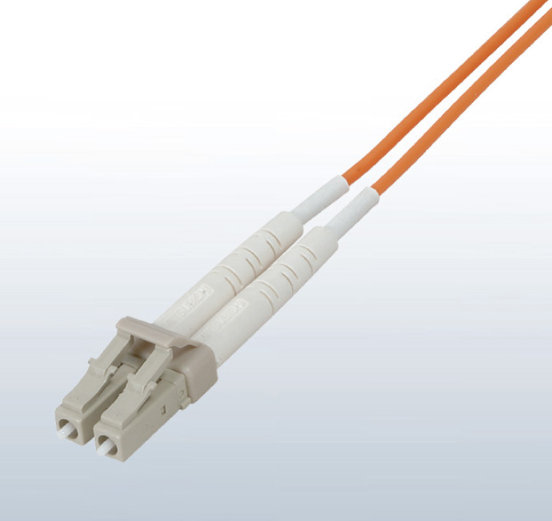
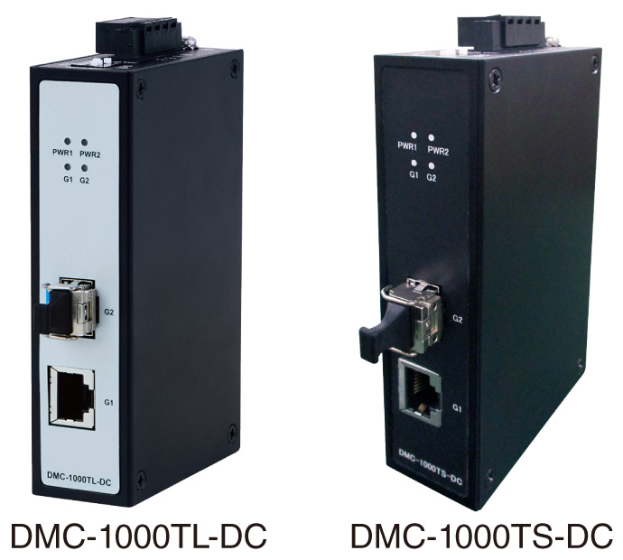
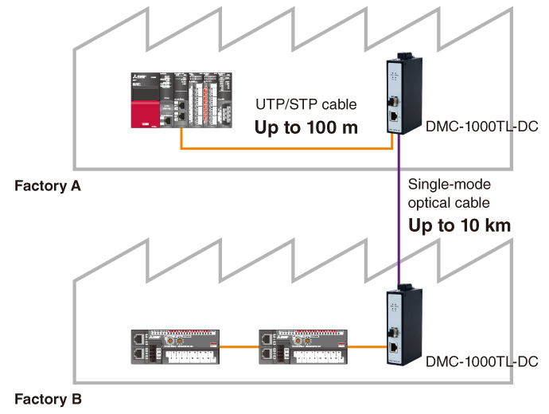
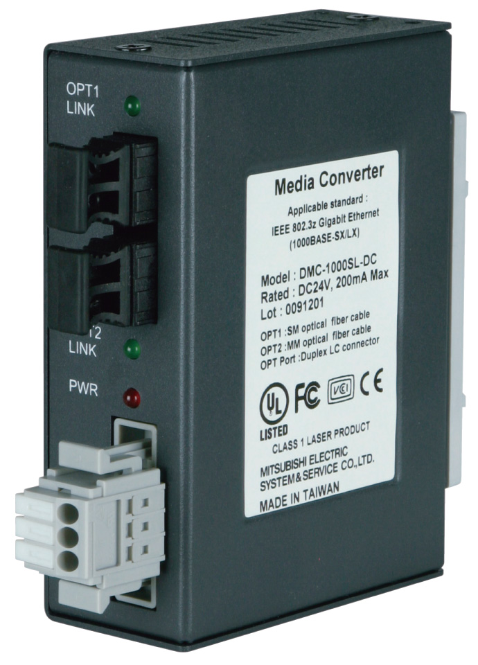
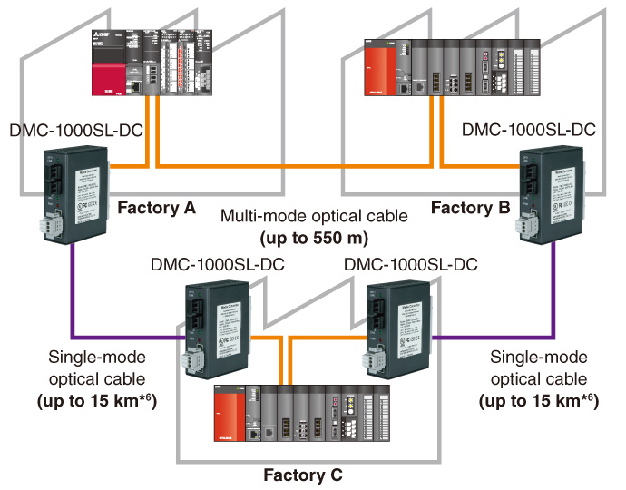

Process Control/Redundant Partner products

Mitsubishi Electric System & Service
Optical cable
- QP-AW is made of plastic material having break-proof*1 and superior bending characteristics*2
- A wide range of lineup supports versatile environments. CC-Link Partner Association recommended products
- The indoor and outdoor use cables are free of tension members, and have an allowable tension equivalent to the reinforced type for outdoor use that allows them to be pulled directly
- QG-BU for indoor use supports the high flame resistant UL Listed (UL Type OFNR) compatible cable that has passed the UL1666 Riser Flame Test
- Reinforced type outdoor use cables are waterproof, and can be used even in flooded or temporarily submerged areas
- A connector boot with improved bending characteristics reduces the possibility of fiber breakage at the connector base

LCF connector
Duplex LC connector (IEC 61754-20)
| Model | QP-AW*3 | QG-AW | QG-B | QG-BU | QG-VCT | QG-C | QG-DL | |||
|---|---|---|---|---|---|---|---|---|---|---|
| Operating environment/ application |
In the control panel |
In the control panel |
Indoor | Indoor, UL approved |
Indoor, movable |
Outdoor | Outdoor, reinforced (water shielding) |
|||
| Max. cable length | 10 m | 550 m | ||||||||
| Optical fiber types | Multi-mode optical fiber (GI) | |||||||||
| Material/ outer diameter |
Core | Plastic/ 55 ± 5 µm |
Fused quartz/50 ± 3 µm | |||||||
| Clad | Plastic/ 490 ± 5 µm |
Fused quartz/125 ± 2 µm | ||||||||
| Code jacket |
Material | PVC (blue) | PVC (orange) | |||||||
| Outer diameter |
ø2.0 mm × 2 |
ø2.0 mm × 2 |
ø2.0 mm × 2 |
ø1.8 mm × 2 |
ø2.0 mm × 2 |
ø2.0 mm × 2, 4, 6, 8 |
||||
| Cable jacket |
Material | - | - | Flame retardant PE (orange) |
Flame retardant PVC (blue) |
Elastic PVC (orange) |
Flame retardant PE (black) |
LAP sheath (black) |
||
| Outer diameter |
- | - | ø6.0 mm | ø5.0 mm | ø6.0 mm | 2, 4 cores | 10.0 mm | |||
| 6 cores | 11.0 mm | |||||||||
| 8 cores | 12.0 mm | |||||||||
| Operable temperature range | -20…60°C | |||||||||
| Adaptable connector | LCF connector*4, SC connector*3, FC connector*3 | |||||||||
- *1.The allowable tension is about twice the QG-AW.
- *2.The allowable bending radius is about 1/2 times the QG-AW.
- *3.The QP-AW does not support the following.
- SC, FC connector
- Processing of connectors at the site, fusion splice
- Splice connection of connectors
- Media converter and connection terminal
- *4.Use LCF connector for connection to the CC-Link IE Controller Network products. (LCF connector: two LC connectors are connected) When installing CC-Link IE Controller Network-compatible optical cable, please refer to the installation manual of the CC-Link Partner Association.
Industrial media converter
- Converting 1000BASE-T/100BASE-TX to 1000BASE-LX/SX and vice versa can extend the station to station distance (DMC-1000TL-DC: maximum 10 km, DMC-1000TS-DC: maximum 550 m)
- Noise immunity performance ideal for FA environments ensures use as noise/lightening measures to protect communication line
- Complies with UL/CE/FCC standards enabling export to Europe and North America

Application example (DMC-1000TL-DC)

Specification*5
| Item | DMC-1000TL-DC | DMC-1000TS-DC | |
|---|---|---|---|
| Conforming standard | IEEE802.3z (1000BASE-LX) | IEEE802.3z (1000BASE-SX) | |
| Compatible cable | Type | 1000BASE-LX compatible single mode optical cable |
1000BASE-SX compatible Multi-mode optical cable (core/clad: 50/125 µm Band: 500 MHz·km or higher λ = 850 nm) |
| Connector | Double LC connector (IEC 61754-20) | ||
| Method for connection | Crossing (A to B, B to A) | ||
| Transmission distance | Max. 10 km | Max. 550 m | |
- *5.Specifications described is about the configuration using optical cables only. For further details, please refer to the relevant product manuals.
Industrial media converter
- When the station-to-station distance is greater than 550 m, two of these units with optical cable can extend the total station-to-station distance up to 15 km
- Equipped with the link pass through function, this converter supports the network loop-back function in case of a cable disconnection

Application example

Specifications
| Item | DMC-1000SL-DC | ||
|---|---|---|---|
| OPT1 port | OPT2 port | ||
| Conforming standard | IEEE802.3z Gigabit Ethernet (1000BASE-LX) | IEEE802.3z Gigabit Ethernet (1000BASE-SX) | |
| Transmission format | Full duplex system | ||
| Compatible cable | Optical fiber | 1000BASE-LX compatible single-mode optical cable |
1000BASE-SX compatible multi-mode optical cable*7 (core/clad 50/125 µm area 500 MHz·km or higher λ = 850 nm) |
| Connector | Duplex LC connector (IEC 61754-20 compliant) | ||
| Method for connection | Crossing (A to B, B to A) | ||
| Power supply specification | 20.4…26.4 V DC (Power supply terminal block) | ||
| Standards | UL, CE, FCC Part15 Class B, VccI Class B | ||
| Max. number of connectable devices between stations | 4 | ||
- *6.Multi-mode optical cable can be also used for connection. The transmission distance is up to 550 m.
- *7.To connect to the CC-link IE Controller Network product, use the Mitsubishi Electric System & Service QG Series optical cable.